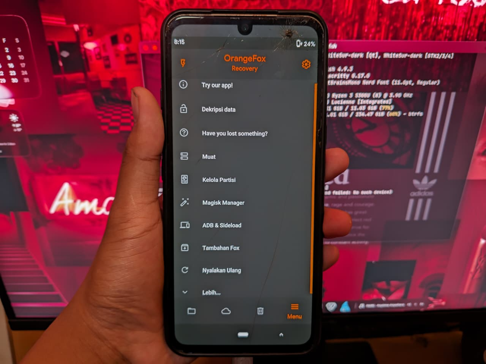
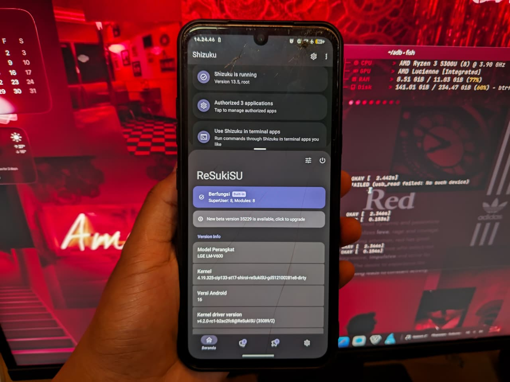
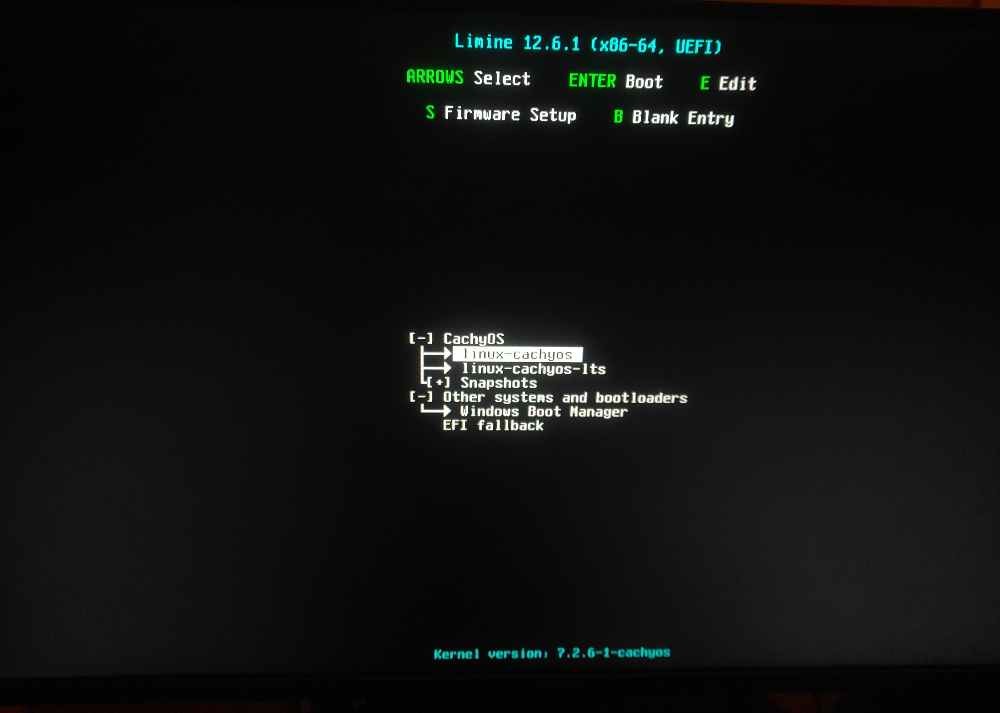

Workstation teknisi dengan terminal CachyOS Linux dan perangkat Android terkoneksi via ADB shell debugging.Eksekusi perintah fastboot flash recovery OrangeFox via terminal Linux dengan status penulisan partisi sukses.

Antarmuka recovery OrangeFox untuk manajemen partisi, dekripsi data internal, dan pencadangan partisi vital.

Lingkungan root modern menggunakan ReSukiSU v4.2.0 dan Shizuku dengan status SELinux Enforcing pada Android 16.

Konfigurasi bootloader UEFI Limine untuk dual-boot CachyOS Linux (Kernel 7.2.6) dan Windows Boot Manager.Hasil optimasi sistem Windows 11 IoT Enterprise LTSC 24H2 dengan penggunaan RAM terpangkas hingga 483 MB idle.
Suasana Ruang Kerja JasaOprek
Audio latar suasana meja kerja saat proses flashing firmware dan penyesuaian sistem berlangsung.